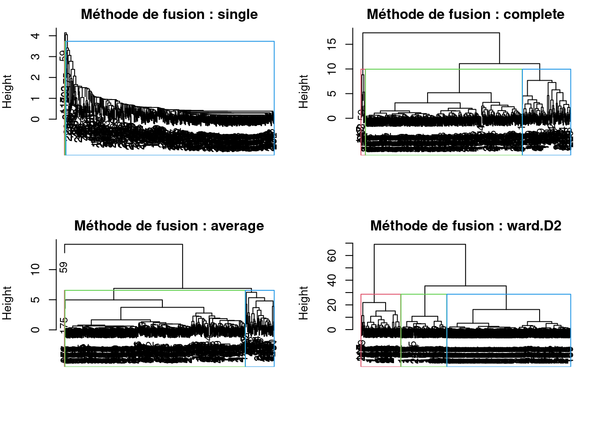
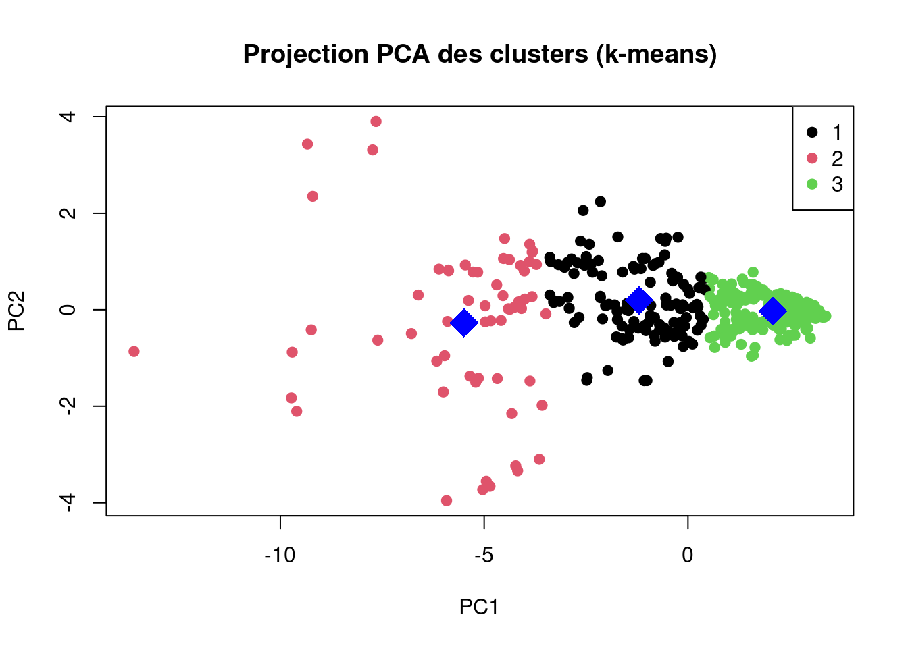
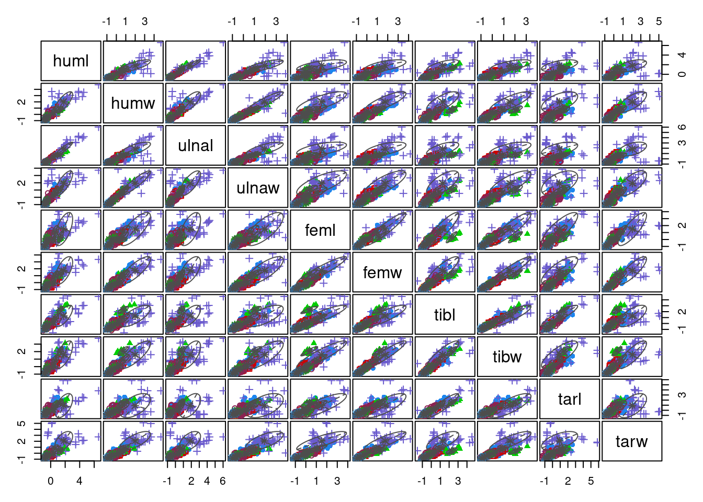
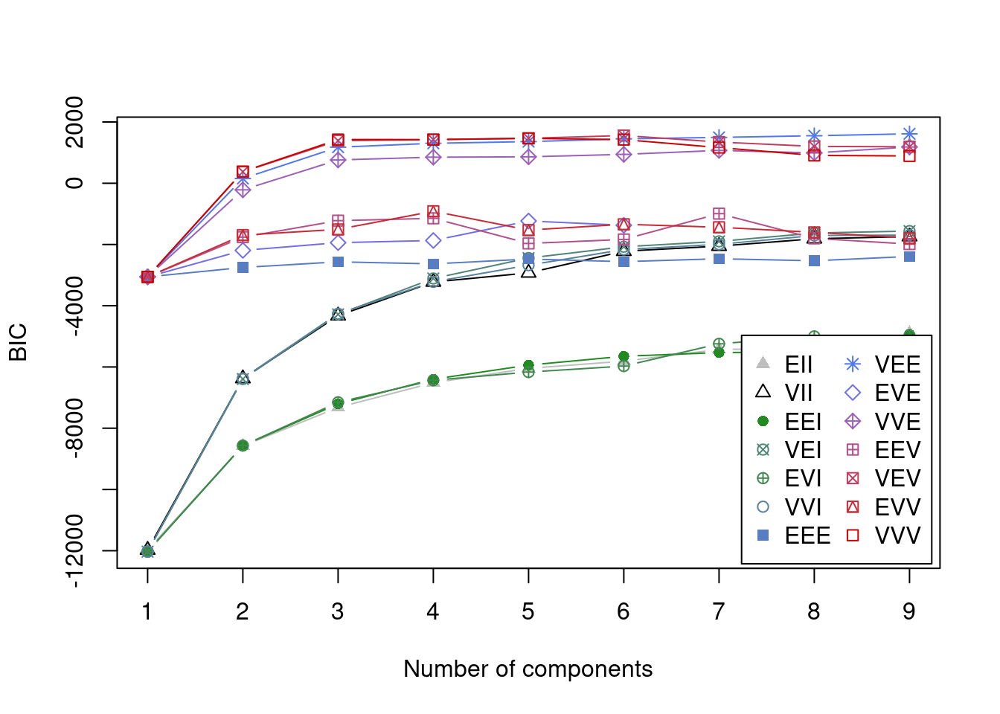

Chapter 3 Comparaison des Résultats
3.1 CAH
Les résultats obtenus avec la CAH varient selon la méthode de fusion utilisée. La méthode single produit des clusters peu pertinents en raison de l’effet de chaînage. En revanche, ward.D2 génère des clusters bien séparés et compacts, ce qui en fait la méthode hiérarchique la plus convaincante dans ce cas.

3.2 K-means
K-means affiche également de bons résultats, avec trois groupes distincts visibles dans la projection PCA. Toutefois, il repose sur l’hypothèse de clusters sphériques et peut être sensible aux points initiaux.

3.3 Méthode de mélanges
Le modèle de mélange gaussien permet de modéliser les données comme une combinaison de plusieurs lois normales. L’analyse du critère BIC montre que le modèle optimal comporte 3 composantes, ce qui est cohérent avec les autres méthodes (K-means, CAH). Le modèle VEV ou similaire offre la meilleure valeur de BIC. La matrice de dispersion indique une séparation claire entre les clusters, avec des formes elliptiques qui s’ajustent bien à la structure des données, ce qui constitue un avantage par rapport à K-means qui impose des clusters sphériques. Ce modèle est donc particulièrement adapté lorsque la forme et l’orientation des groupes varient.
FALSE ----------------------------------------------------
FALSE Gaussian finite mixture model fitted by EM algorithm
FALSE ----------------------------------------------------
FALSE
FALSE Mclust VEE (ellipsoidal, equal shape and orientation) model with 9 components:
FALSE
FALSE log-likelihood n df BIC ICL
FALSE 1293.25 420 161 1614.02 1547.736
FALSE
FALSE Clustering table:
FALSE 1 2 3 4 5 6 7 8 9
FALSE 64 57 12 43 41 55 65 14 69